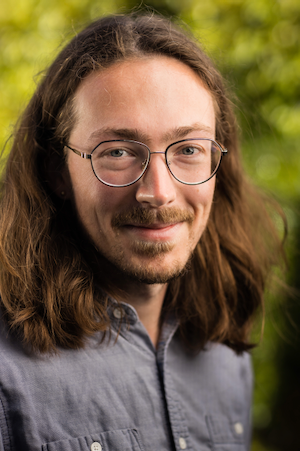

<div class='blurb'>
    <h1>Peter Senchyna</h1>
    <p>Hi! I'm an astronomer, currently a Carnegie Postdoctoral Fellow at <a href="https://obs.carnegiescience.edu/">the Observatories (OCIW)</a> in Pasadena.
    My research is centered on improving our understanding of populations of young, massive stars with far fewer heavy elements than our Sun.
    Such short-lived metal-poor stars are hard to find nearby, but they dominate the most distant galaxies in the Universe.
    With new facilities like JWST designed to find and study these ancient galaxies in unprecendented detail coming online now, observations of the rare examples of similar stellar populations in the local Universe are increasingly important.
    More broadly I'm interested in the interface between stellar and extragalactic astronomy, and I've been lucky enough to use state-of-the-art telescopes including the MMT in Arizona, the Magellan telescopes in Chile, and the Hubble Space Telescope in low Earth orbit in this pursuit.
     </p>
</div>
